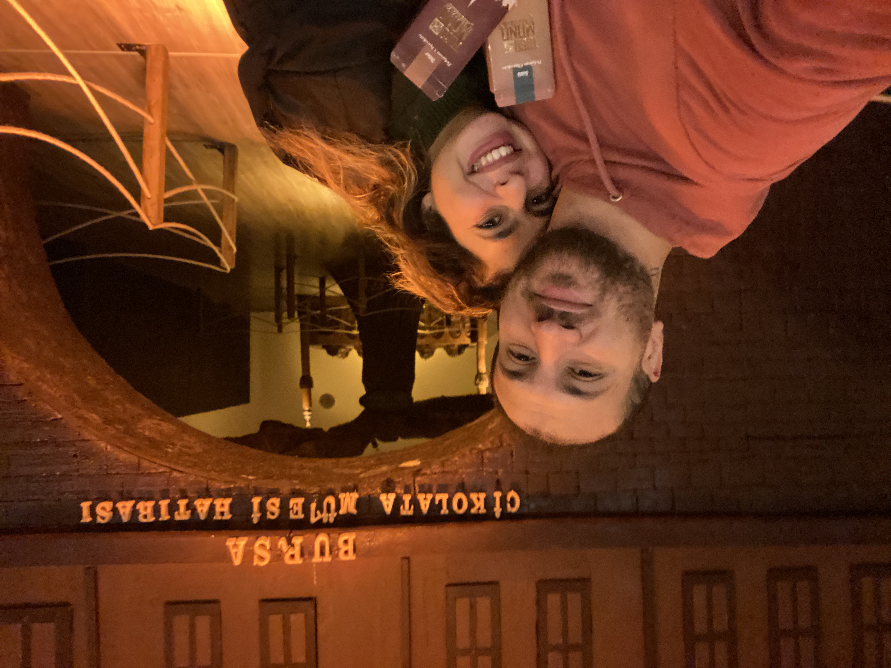

Rüzgarlı ama çoook güzel bir gün. Sevdiğimiz herşey ve herkes ellerimizle dokunabileceğimiz uzaklıktaydı.
16 Nisan 2023
16 Nisan 2023

Bursa'daki en büyük keşfimiz modern meyhane "Tufi". Sonraları çete olduklarını düşünmeye başlasak da bu ilk meyhane deneyimimizdi.
7 Kasım 2022
7 Kasım 2022
Evde kös kös oturan Hayriye'yi yeniden hayata bağlama çabalarımızdan biri. Mudanya.
16 Nisan 2023
16 Nisan 2023
Suyun içinde orman mı olurmuş deyip gidip kendimiz gördük. Acarlar longozu.
19 Nisan 2023
19 Nisan 2023
Gölyazı daha güzel değildi.
29 Nisan 2023
29 Nisan 2023
Gidenin daha yolu vardır. Kalan kaldığıyla.. Bir de gidişleri hiç sevmediğimi bilse.
30 Nisan 2023
30 Nisan 2023

Doyamadık yürümelere, biraz da Gökdere'yi dinledik.
7 Mayıs 2023
7 Mayıs 2023
Anneye selfie atalım dedi.
Cemal Süreyya görse bahsettiğim kahvaltı bu derdi. Kurnaköy
4 Eylül 2022
4 Eylül 2022
Sabahtan akşama kadar gülerek el ele gezilebilen Eskişehir'de biz de boş durmadık.
30 Ekim 2022
30 Ekim 2022
Eskişehir'e renk gelen bir gün
30 Ekim 2022
30 Ekim 2022
Nikah şahitliği teklifimizi düşünüyor. Eskişehir Balmumu Müzesi
30 Ekim 2022
30 Ekim 2022
Palmiyeli bir kenti daha güzel yapan birşey varsa o da gülen iki mutlu yüzdür. Yalova
13 Kasım 2022
13 Kasım 2022

Çikolata'nın bizi yükselttiği doğrudur.
16 Kasım 2022
16 Kasım 2022
Kimse Hayriye'nin et sevgisini sınamasın:)
19 Kasım 2022
19 Kasım 2022
Siyah bize hep yakışmıştır. Nöbetten çıkıp şehirler arası yolculuk yapabilmek herkesin harcı da değildi. Kayapa
10 Aralık 2022
10 Aralık 2022
Bol oksijen, bol manzara, bol rüzgar ve bol gülmeli bir günden geriye kalanımız. Bandırma
17 Aralık 2022
17 Aralık 2022
Yatmak için bir davete bir fırsata ihtiyaç duymadan her yerde yatar pozisyonda Hayriye:) En güzel yılbaşılarımızdan biri.
31 Aralık 2022
31 Aralık 2022
Bursa'da girmediğimiz bir delik kalmış. İyi ki girdik. Musmutlu bir günden kalan. Panaroma 1326
8 Ocak 2023
8 Ocak 2023
Panorama 1326 Fetih Müzesi.
8 Ocak 2023
8 Ocak 2023
Özene bezene sofra hazırlamanın birlikteyken zevk verdiğini hissettiğimiz bir yılbaşı akşamı.
31 Aralık 2022
31 Aralık 2022
Hiçbir manzara seninki kadar güzel değil.
11 Eylül 2022
11 Eylül 2022